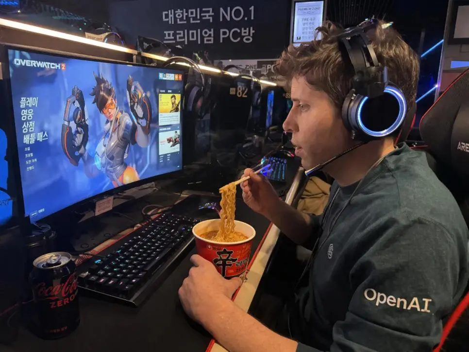
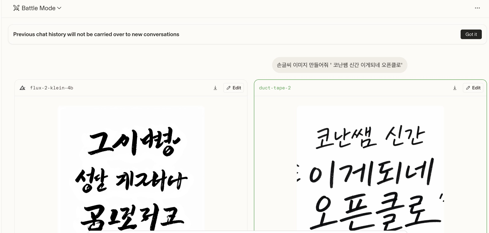
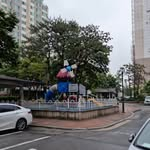
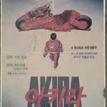
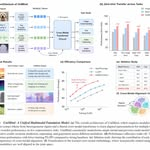
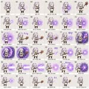

duct-tape 시리즈란?
2026년 4월 중순, OpenAI는 LM Arena의 이미지 평가 사이트 arena.ai/image에서 익명으로 새로운 이미지 생성 모델을 테스트하기 시작했습니다.
코드네임은 duct-tape 계열:
| 모델명 | 비고 |
|---|---|
maskingtape-alpha | 알파 버전 |
gaffertape-alpha | 알파 버전 |
packingtape-alpha | 알파 버전 |
duct-tape | 메인 모델 |
아직 공식 배포 전입니다. arena.ai/image 에서 블라인드 테스트로만 경험할 수 있으며, OpenAI가 직접 발표하기 전까지 정식 명칭도 공개되지 않았습니다.
하지만 커뮤니티의 반응은 이미 폭발적입니다. “인터넷에서 사진 다운로드 받아서 주는 게 아닌지 의심스러울 정도”라는 평가가 나올 정도로, 기존 이미지 생성 AI의 한계를 완전히 뛰어넘는 결과물들이 쏟아지고 있습니다.
커뮤니티에서 난리 난 결과물들
실제로 한국 커뮤니티에서는 duct-tape 모델로 만든 이미지들이 화제입니다. 실제 테스트 결과물의 일부:
수산시장에서 일하는 호날두 — 완벽한 포토리얼리즘
 포장마차에서 혼술하는 일론머스크 — 한국 밤문화 디테일까지 구현
포장마차에서 혼술하는 일론머스크 — 한국 밤문화 디테일까지 구현
PC방 간 샘 올트먼 — 한국 인테리어, 모니터 화면, 간판까지 완벽

오버워치 신규영웅 도람푸 — 게임 캐릭터 디자인킬리안 음바페 국밥집 오픈 — 간판, 메뉴판 텍스트까지 완벽한 한국어 렌더링
실사 수준의 결과물 — 진짜 사진과 구분 불가
왜 이 모델이 특별한가
기존 AI 이미지 모델들이 여전히 어려워하던 영역들을 duct-tape 시리즈는 거의 완벽하게 구현합니다.
1. 텍스트 렌더링 (Text Rendering)
가장 큰 도약입니다. 한국어를 포함한 비라틴 문자를 자연스럽게 렌더링합니다.
캘리그라피, 포스터, UI 요소, 간판, 뉴스 타이틀 등 — 텍스트가 이미지의 일부로 완벽하게 녹아듭니다. 기존 모델들은 글자가 외계어로 나오거나, 문자가 있어야 할 배경을 흐림 처리했던 것과 대조적입니다.

2. 포토리얼리즘 (Photorealism)
인물 사진, 길거리 사진, CCTV 영상 캡처까지 — 사진인지 AI인지 구별이 사실상 불가능합니다.

한국 CCTV 캡처까지 구현하는 것은, 한국어 컨텍스트에 대한 학습 데이터가 얼마나 깊은지를 보여주는 대목입니다.
3. UI / 디자인 모사
웹사이트 UI, 모바일 앱 화면, 프레젠테이션 슬라이드, 인포그래픽까지 완벽하게 재현합니다.
디자이너가 실제로 작업한 것 같은 레이아웃, 타이포그래피, 컬러 스케일까지 포착합니다.
4. 옛날 자료 복원
존재하지 않는 옛날 사진, 문서, 포스터를 과거의 인화지 질감까지 재현합니다.

이건 단순한 “옛스타일 필터”가 아닙니다. 당시의 인화 기술, 종이 질감, 컬러 베이스까지 학습한 결과로 보입니다.
5. 가상 논문 Figure & 아키텍처
학술 논문의 Figure, 차트, 건축 렌더링까지 생성합니다.

연구자가 아직 수행하지 않은 실험의 결과를 시각적으로 시뮬레이션하는 것이 가능해집니다. 윤리적 논의가 필요한 영역입니다.
6. 한국어 서비스 UI 모사
카카오톡 화면, 유튜브 썸네일, 인스타그램 라이브 화면까지 재현합니다.
이는 한국어 뿐 아니라 한국 서비스의 UI 컨벤션까지 학습한 것으로, 현지화(Localization) 수준이 전례 없이 높습니다.
7. 브랜드 & 광고
상업용 브랜드 시각물을 실제 에이전시가 제작한 것 같은 퀄리티로 생성합니다.
8. 게임 & 스프라이트
게임 화면, 캐릭터 스프라이트, 게임 일러스트까지 생성합니다.

기존 모델과의 비교
| 능력 | 기존 모델 (DALL-E 3 등) | duct-tape 시리즈 |
|---|---|---|
| 한국어 텍스트 | 외계어 또는 생략 | 완벽 렌더링 |
| UI/디자인 | 대략적 레이아웃 | 픽셀 단위 정확도 |
| 옛날 자료 | 스타일 필터 수준 | 인화지 질감 재현 |
| 포토리얼리즘 | AI 특유의 질감 | 구분 불가 |
| 한국 서비스 UI | 불가 | 카카오톡, 유튜브 등 |
| 논문 Figure | 차트 정도 | 전체 Figure 재현 |
DALL-E 종료와의 연관성
OpenAI는 2026년 5월 기존 DALL-E 이미지 생성 서비스를 종료한다고 발표했습니다. duct-tape 시리즈가 공식 배포되면, GPT 내에 통합된 이미지 생성 기능이 DALL-E를 완전히 대체할 가능성이 높습니다.
타이밍이 맞습니다. arena.ai에서 커뮤니티 테스트를 진행하면서, 동시에 기존 서비스를 정리하는 것은 — 새 모델이 준비되었다는 강력한 신호입니다.
지금 테스트하려면
- arena.ai/image 접속
- 이미지 생성 블라인드 테스트 참여
maskingtape-alpha,gaffertape-alpha,packingtape-alpha,duct-tape모델이 나오면 테스트
블라인드 테스트이므로 모델명이 보이지 않을 수도 있지만, duct-tape 시리즈의 결과물은 한 번 보면 알 수 있습니다. 그만큼 다른 모델과 차이가 납니다.
윤리적 고민
이 수준의 이미지 생성 능력은 명백하게 양날의 검입니다.
- 뉴스 사진 조작: 존재하지 않는 사건의 “증거 사진” 생성
- 인물 딥페이크: 구분이 불가능한 가상 인물 사진
- 지식재산권: 브랜드, 포스터, UI를 실제와 구별 불가하게 복제
- 학술 윤리: 존재하지 않는 논문 Figure로 연구 시뮬레이션
“이미 AI 이미지는 구별할 수 있다”는 방어선이 무너지고 있습니다. duct-tape 시리즈는 이 방어선을 완전히 해체하는 수준입니다.
정리
- OpenAI가 duct-tape 시리즈 (maskingtape, gaffertape, packingtape, duct-tape) 라는 코드네임의 차세대 이미지 모델을 테스트 중
- arena.ai/image 에서 블라인드 테스트로 경험 가능
- 텍스트 렌더링, 포토리얼리즘, UI 모사, 한국어 서비스 재현, 옛날 자료 복원 등 기존 한계를 완전히 뛰어넘음
- DALL-E 2026년 5월 종료와 맞물려, 공식 배포가 임박한 것으로 추정
- 윤리적 문제 (딥페이크, 허위 정보, 지식재산권)에 대한 사회적 논의가 시급함
FAQ
Q. duct-tape 모델을 공식으로 사용할 수 있나요?
아직 공식 배포 전입니다. arena.ai/image 에서 블라인드 테스트로만 경험할 수 있습니다.
Q. DALL-E와 어떻게 다른가요?
텍스트 렌더링(특히 한국어), UI 정확도, 포토리얼리즘에서 근본적인 차이가 있습니다. DALL-E가 “AI 느낌이 나는 이미지”를 만든다면, duct-tape은 “진짜인지 의심하게 만드는 이미지”를 만듭니다.
Q. 무료로 테스트할 수 있나요?
arena.ai/image의 블라인드 테스트는 무료로 참여할 수 있습니다. 모델명이 보이지 않는 블라인드 방식이지만, duct-tape 시리즈의 결과물은 다른 모델과 확연히 구분됩니다.
Q. 왜 “duct-tape”라는 이름인가요?
OpenAI의 이미지 모델 코드네임 관행으로 보입니다. maskingtape(마스킹테이프), gaffertape(갑테이프), packingtape(포장용 테이프), duct-tape(덕트 테이프) — 모두 접착 테이프 계열에서 따온 이름입니다. 정식 명칭은 출시 때 다를 수 있습니다.
참고:
- @choi.openai Threads 스레드 — 15가지 제작 사례
- @choi.openai Threads 스레드 2 — 신뢰 불가 사례 15가지
- LM Arena Image — 블라인드 테스트 사이트